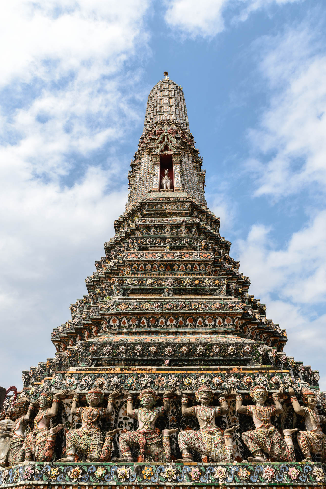
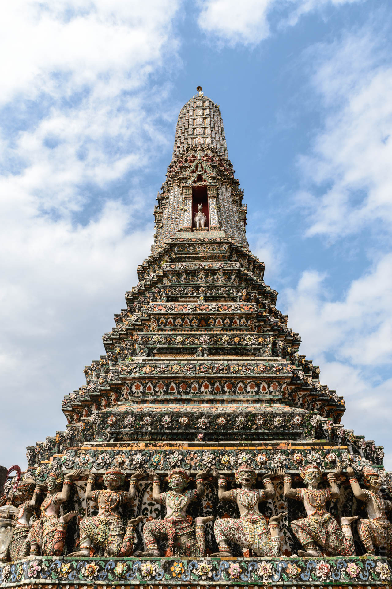

14. Dezember 2013
Bangkok

Als Bangkok-Rückkehrer haben wir es uns diesmal sehr gemütlich gemacht. Ohne Sightseeing-Stress konnten wir uns ganz den Geheimtipps unser BKK-Profis widmen. Allem voran haben wir uns an die ungehemmte Verköstigung von Street-Food gemacht. Auf Plastikstühlen in der warmen thailändischen Nacht schmeckt ohnehin alles besser. Aber beim verrückten Jok, wo man sich gleich mehrere der spottbilligen Gerichte bestellt, ist es unschlagbar lecker.


Vom Jetlag leicht aus dem Rhythmus haben wir den nächsten Morgen fast verpennt. So ganz ohne Tempel geht es natürlich auch nicht. Daher sind wir mit dem Boot über den Cha Praya gesetzt, um Wat Arun zu sehen. Bei einem Zwischenstopp sind wir noch durch das nette Marktviertel Wang Lang spazieren. Wir haben uns alle paar Meter geärgert, dass wir ausgiebig gefrühstückt haben, denn die Standreihen, die kaum einen Meter weit auseinander stehen, bieten lauter Köstlichkeiten. Nachdem wir dann zum dritten Mal am selben Stand vorbeigekommen sind, haben wir uns aus dem Gewirr befreit und sind weiter zum Tempel gelaufen. Wat Arun ist wirklich eine der schönsten Sehenswürdigkeiten Bangkoks. Die große Stupa ist über extrem steile Treppen zu besteigen. Oben hat man einen tollen über den Fluss. Der Tempel hat ist kunstvoll mit alten Keramikscherben verziert, wie etwa Blumen aus geschliffenen Porzellantellern.

 

Später sind wir vom Golden Mount aus mit dem Klong-Boot nach New Bangkok gefahren. Dieses praktische Fortbewegungsmittel war uns bisher völlig verborgen geblieben. Dabei kann man mit den Fähren für ein paar Baht quasi durch die Hinterhöfe rasen. Kein Taxi oder Tuktuk kann bei dieser Strecke mithalten, denn auf dem Wasser gibt es keinen Stau. Im neuen Bangkok reihen sich gigantische, glitzernde Shopping-Malls aneinander. Die Dimensionen sind völlig explodiert, wenn man versucht sich hier als Fußgänger zu bewegen. Die Hochbahn über den breiten Straßen sorgt für das Blade-Runner-Feeling.

Auf dem Rückweg haben wir einen Abstecher auf das Protestgelände gemacht, das die Demonstranten passender Weise am Democracy Monument aufgebaut haben. Die Plakate zeigen zwar die abgetrennten Köpfe von Regierungspolitikern, aber in den provisorischen Hallen grooven tausende Demonstranten ganz friedlich zu Thai-Rock, der live auf der großen Bühne gespielt wird. Alles und jeder ist in Thailands Flagge oder Nationalfarben gehüllt, was die guten Absichten gegenüber dem Vaterland absolut unzweifelhaft lässt. Aus der Demo ist ein ausgewachsenes Volksfest mit Security, den allgegenwärtigen Food Stalls und viel live Musik geworden.
Den nächsten Tag haben wir spät mit dem obligatorischen Besuch in Chinatown begonnen. Wenn man glaubt, die enge Gasse zwischen den Ständen wäre schon völlig von Menschen verstopft, schiebt sich tatsächlich noch eine voll beladene Vespa hindurch.